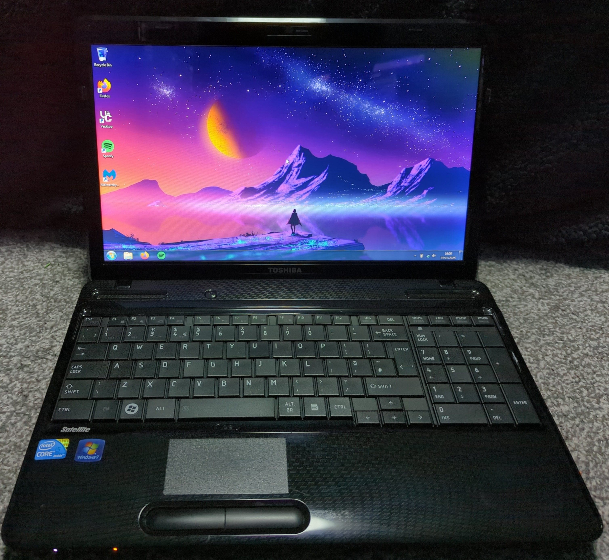

Toshiba Satellite L650

Toshiba Satellite L650 | Owned from 2017
Reiko is my primary Windows 7 laptop i had been give this laptop by a family member and i have many memory's of using it throught the years. It was also the first device i installed linux onto.
Reiko is in good condition and has recently had a new keyboard as the old one had many key's that no longer worked
CPU: Intel Core i5 430M
GPU: Intel Graphics Media Accelerator (GMA) HD Graphics
Memory: 6GB
Storage: 500GB HDD
Screen: 1366 x 768 LCD
OS: Windows 7